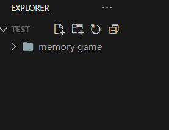

Wij hebben een memo game gecreërd om jullie geheugen te testen!
Hiervoor heb je volgende talen nodig:
- HTML
- CSS
- JavaScript
Om te beginnen gaan we eerst de HTML code schrijven.
Stap 1 - Mappenstructuur
Eerst open je uw code-editor Visual Studio Code
Om te beginnen gaan we eerst een map aanmaken voor de website. Deze map noemen we "memory game".
Daarna gaan we de volgende folders aanmaken:
- CSS
- JS
- FONTS
Stap 2 - Creëer de index.html
De HTML code is de basis van de website. Hierin zetten we de structuur van de website.
-
Eerst gaan we de doctype schrijven
<!DOCTYPE html>. - Druk nu op ! op je toetsen bord en daarna ENTER.
- Kopieër deze code en plaats het in de body tag, in deze code voegen we divs en een button toe om straks onze CSS en JavaScript op te baseren.
- Nu gaan we de CSS linken. Dit doen we door de volgende code te kopieëren en te plakken in de head tag.
- Nu gaan we de JavaScript linken. Dit doen we door de volgende code te kopieëren en te plakken in de body tag onderaan. <script src="js/main.js"></script>
Stap 3 - CSS toevoegen
De CSS code is de styling van de website. Hierin zetten we de kleuren, afmetingen en andere styling van de website.
- Nu gaan we de CSS toevoegen. Dit doen we door de volgende code te kopieëren en te plakken in de style.css file.
- Hier veranderen we de background naar een regenboog kleur met gradient, we zorgen er ook voor dat onze "game" in het midden komt te staan.
Stap 4 - JavaScript
De JavaScript code is de logica van de website. Hierin zetten we de functionaliteit van de website.
1. Eerst worden er drie objecten gedefinieerd:
- `Selectors`: een object dat verwijst naar de verschillende HTML-elementen die we nodig hebben voor de functionaliteit van het spel, zoals het bord, de timer en de knop om het spel te starten.
- `State`: een object dat de huidige status van het spel bijhoudt, zoals het aantal kaarten dat is omgedraaid, het totale aantal omdraaiingen en de totale tijd dat het spel heeft geduurd.
- `Dimensions`: een constante die de dimensie van het bord aangeeft en deze waarde wordt uit de HTML gehaald.
2. Vervolgens wordt de functie `generateGame` gedefinieerd. Deze functie wordt gebruikt om het bord te genereren en de kaarten op het bord te plaatsen.
- Er wordt gecontroleerd of de dimensie van het bord even is. Als dat niet het geval is, wordt er een foutmelding gegenereerd en wordt het spel niet gestart.
- Er wordt een array van emojis gedefinieerd die op de kaarten worden geplaatst.
- Er wordt een ander array gegenereerd door de emoji array te mengen en elke emoji twee keer toe te voegen aan het array. Dit nieuwe array bevat dus twee keer zoveel items als de dimensie van het bord.
- Er wordt HTML gegenereerd met de items in het nieuwe array en er wordt een nieuw bord gemaakt met deze HTML.
- Het nieuwe bord vervangt het oude bord.
3. De functie `pickRandom` wordt gedefinieerd. Deze functie wordt gebruikt om een willekeurig aantal items uit een array te selecteren.
- De functie neemt een array en het gewenste aantal items als parameters.
- Er wordt een kopie van de array gemaakt en er wordt een lege array `randomPicks` gedefinieerd.
- Er wordt een loop uitgevoerd voor elk gewenst item, waarbij een willekeurig indexnummer wordt gegenereerd en het item op die index wordt toegevoegd aan de `randomPicks` array. Het item wordt vervolgens verwijderd uit de gekloonde array, zodat het niet nogmaals wordt geselecteerd.
- De `randomPicks` array wordt geretourneerd.
4. De functie `shuffle` wordt gedefinieerd. Deze functie wordt gebruikt om een array willekeurig te mengen.
- De functie neemt een array als parameter.
- Er wordt een kopie van de array gemaakt en er wordt een loop uitgevoerd waarbij elk item in de array wordt verwisseld met een ander item op een willekeurige index.
- De nieuwe array wordt geretourneerd.
- Er wordt een klikgebeurtenis aan het document gekoppeld.
- Als er op een kaart wordt geklikt en deze kaart nog niet is omgedraaid, wordt de functie `flipCard` opgeroepen
6. De functie `startGame()` start het spel. De startknop wordt uitgeschakeld en de timer begint te lopen.
7. De `flipCard` functie handelt het omdraaien van de kaarten af. Het neemt een `card` parameter, die de kaart is die is aangeklikt. De functie controleert of het spel al is gestart en begint zo nodig een nieuwe timer. Het voegt de `flipped` class toe aan de kaart die is aangeklikt en houdt bij hoeveel kaarten er zijn omgedraaid. Als er twee kaarten zijn omgedraaid, controleert de functie of ze overeenkomen. Als dit het geval is, voegt de functie de `matched` class toe aan de kaarten en controleert of de speler het spel heeft gewonnen. Als er geen match is, draait de functie de kaarten na 1 seconde weer terug.
8. De `flipBackCards` functie draait alle kaarten terug die nog niet gematched zijn. Het reset ook het aantal omgedraaide kaarten naar 0.
9. De `checkWinGames` functie controleert of alle kaarten zijn gematched en of de speler het spel heeft gewonnen. Als dit het geval is, roept de functie de `winGame` functie aan die de speler feliciteert.
10. De `winGame` functie laat een alert zien om de speler te feliciteren met het winnen van het spel.
11. Ten slotte roepen we de `generateGame` en `attachEventListeners` functies aan om het spel te genereren en de event listeners aan de document toe te voegen.
Als je alles bij elkaar voegt, heb je een werkend memory spel dat gebruik maakt van HTML, CSS en JavaScript!
Zo zal je code eruit zien op het einde!!!